Data sets are diagramed with green dot as the origin and red edge (if given) as the first violating edge.
Data set 1:
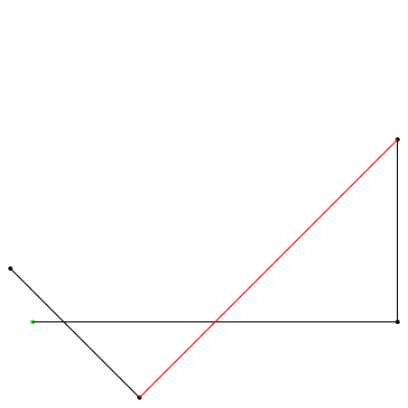
Data set 2:
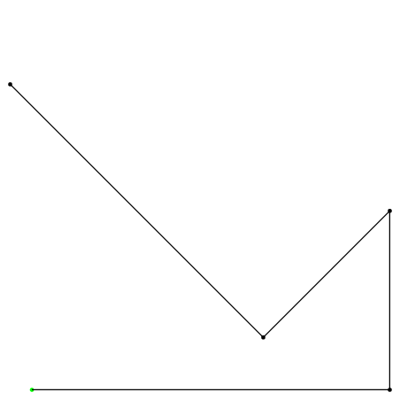
Data set 3:
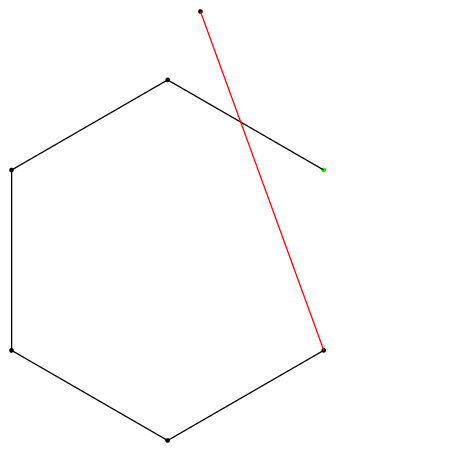
Data set 4:
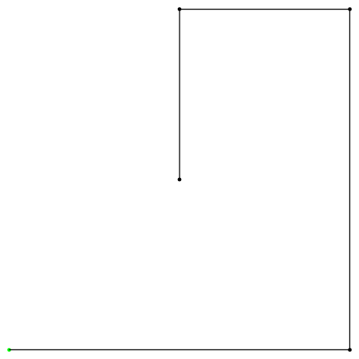
Data set 5:
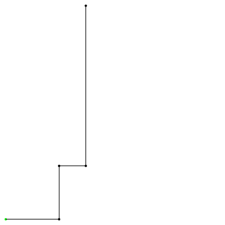
Data set 6:
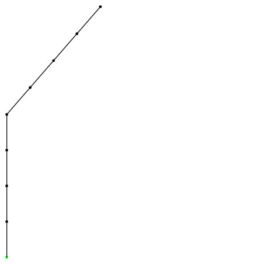
Data set 7:
Data set 8:
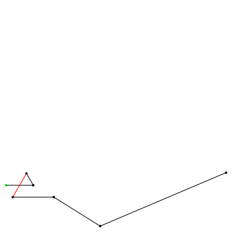
Data set 9:
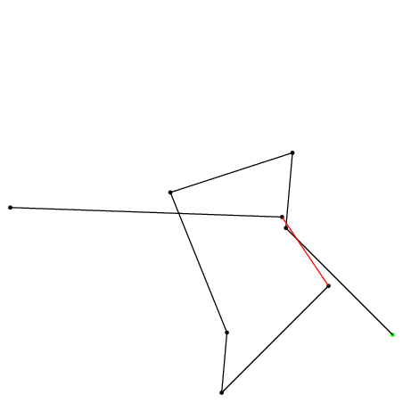
Data set 10:
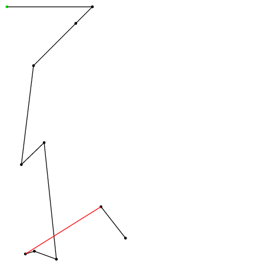
Data set 11:
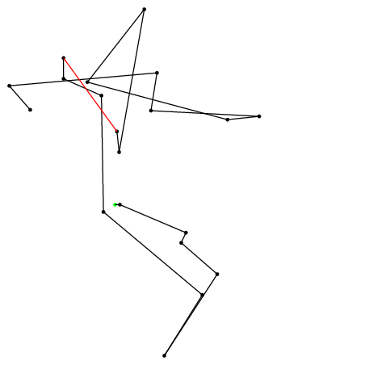
Data set 12:
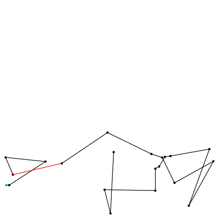
Data set 13:
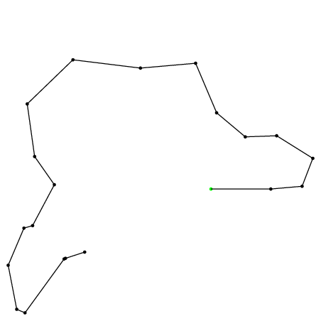
Data set 14:
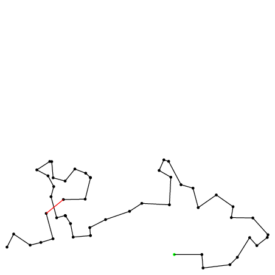
Data set 15:
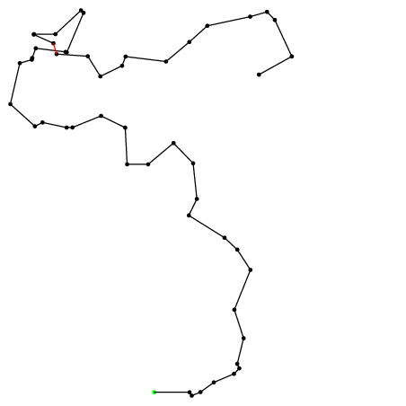
Data set 16:
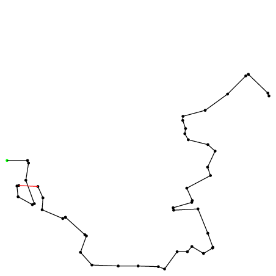
Data set 17:
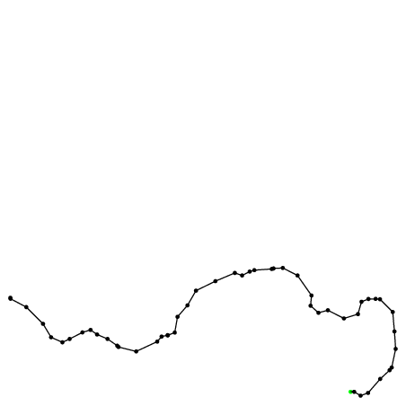